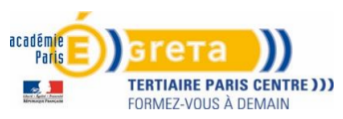

Expériences
-
Depuis mars 2018

Apprenti ingénieur système Linux / sauvegarde de données
SOPRA STERIA - Meudon-la-Forêt (92)- Sauvegarde / restauration de données : Veritas NetBackup
- Sauvegardes MultiCloud : Cloud Azure / CloudPoint / CloudCatalyst
- Configuration de machines virtuelles : Microsoft Azure
- Evolution / amélioration des schémas techniques
-
-
-
Octobre 2015 – Février 2018
Assistant Ingénieur système Linux polyvalent
SERENEO - CLAMART (92)- Supervision applicative (Apache, Tomcat, Postgres) : Centreon
- Supervision matériels (serveurs, NAS, onduleurs) : Centreon
- Supervision systèmes : Centreon
- Création de clusters NoSQL hautement disponibles : Cassandra, Postgres-XL, Citus-Data, PGPool-II
- Inventaire du parc informatique et gestion de tickets : GLPI / OCS
- Gestion et sauvegarde planifiée des machines virtuelles : Proxmox
- Migration d'outils de gestion simplifiée de versions : CVS / GIT
- Installation de serveur de messagerie : Postfix, Dovecot, Exim4
- Automatisation d'installation de serveur : scripting Bash
- Sécurisation de l'infrastructure : fail2ban, Iptables, Kaspersky
- Installation de serveur proxy : Squid
- Installation de serveur VPN : StrongSwan
- Installation de NAS Synology
- Administration d’onduleur Eaton : PCA
-
Juillet 2014 - Octobre 2015
Technicien réseau itinérant Ile-de-France
Helpline - Nanterre (92)- Création de compte AD, boite mail sur exchange, profil lync
- Supervision de serveurs
- Installation et déploiement des stations de travail
- Sauvegarde de données
- Assistance aux utilisateurs - en proximité / par téléphone
- Support informatique : Windows 7, Office, Lotus, compte AD
- Configuration d’outils VPN
- Maintenance logicielle et matérielle -
Mars - Avril 2014
Stage technicien supérieur réseau informatique
DSTI des Mairies de Paris - Paris (75)- Étude du réseau administré autour des vingt Maries de Paris
- Réaménagement de baie de brassage pour l’extension d’un réseau
- Mise en place de réseau temporaire (contexte élection municipale)
- Dépannage sur le câblage informatique avec déplacement dans les Mairies de Paris
-
Décembre 2013 - Janvier 2014
Stage technicien supérieur réseau informatique
Mairie du IVéme - Paris (75)- Installation et déploiement des stations de travail (migration XP vers W7)
- Assistance et conseil aux utilisateurs
Formations
-
Mars 2018 - Mars 2019

Master II Ingénierie de Réseaux et des Systèmes
UVSQ – Versailles (78)L’objectif essentiel du Master IRS est de former des ingénieurs en leur fournissant des méthodologies qui leur permettront de rester opérationnel dans un domaine très dynamique.
Ce parcours s’effectue en partenariat étroit avec le CFA AFTI qui regroupe entre autre Thalès, Orange et Alcatel.
- Infrastructures des réseaux WAN (IGP / EGP)
- Sécurité avancée des réseaux
- Savoir être et gestion des risques
- Sécurité des Bases de Données
- Certifications et Cybercriminalité
- Virtualisation et Sécurité
- Recherche et Innovation
- QoS et Performances des réseaux
- Convergence réseaux Fixes-Mobiles
-
Octobre 2016 - Décembre 2017
Master I ERE Administration Système / Réseaux
CFA AFTI Thales – Orsay (91)Moyenne des notes : 14,5 /20
La formation ERE, titre RNCP de niveau 2, dispense des compétences techniques avancées et développe des capacités en communication, méthodologie, gestion de projet et connaissances de l’entreprise.
- Virtualisation / Cloud
- Haute disponibilité (PCA/PRA)
- Techniques avancées Linux
- services web sécurisés Linux
- Ingénierie microsoft Windows
- Sécurisation des infrastructures
- VOIP, Réseaux mobiles et QoS
- Architectures protocolaires
- Internet des objets
- Gestion de Projet
-
Octobre 2017
Certification Voltaire
IUT – Vélizy-Villacoublay (92Notes : 790 /1000
790 = Niveau Orthographe affaires : Aptitudes pour rédiger des textes qui ont une portée stratégique ou légale, ainsi que pour relire et corriger les textes de collaborateurs.
-
Avril 2016
Certification TOEIC
IUT – Vélizy-Villacoublay (92)Notes : 740 /990
Evaluation des connaissances linguistiques dans un contexte professionnel, tant au niveau de l'écrit que de l'oral.
-
Octobre 2015 - Septembre 2016
Licence ASUR Administration Systèmes / Réseaux
IUT – Vélizy-Villacoublay (92)Moyenne des notes : 14,70 /20
- Administration systèmes
- Architcture & Admininstration réseaux
- Sécurite des réseaux / systèmes
- Administration de bases de données
- Conception / conduite de projet
- Communication environnement Entreprise
- Economie numérique et droit de l’informatique
-
Septembre 2013 - Juin 2014
B.T.S. SIO SISR Option Réseaux
GRETA - Paris centreAvis très satisfaisant
Moyenne des notes : 13,27 /20
Initié via un CIF
- Installer / configurer un réseau local
- Installer / configurer des services réseaux
- Configurer une solution de VLAN
- Base de l'administration d'un réseau
- Mise en place de solutions de sécurisation du SI
- Qualification de matériels / logiciels d'un réseau
- Algorithme appliquée
- Mathématiques
- Analyse économique, managériale et juridique du SI
- Expression et commuication en langue anglaise
- Culture générale et expression
Compétences
English TOIC
Sauvegardes
Supervision
Résaux LAN
Virtualisation
Sécurité Infra
Français Voltaire
Cloud
Résaux Wan
NoSQL
Messagerie
PRA-PCA
Solutions